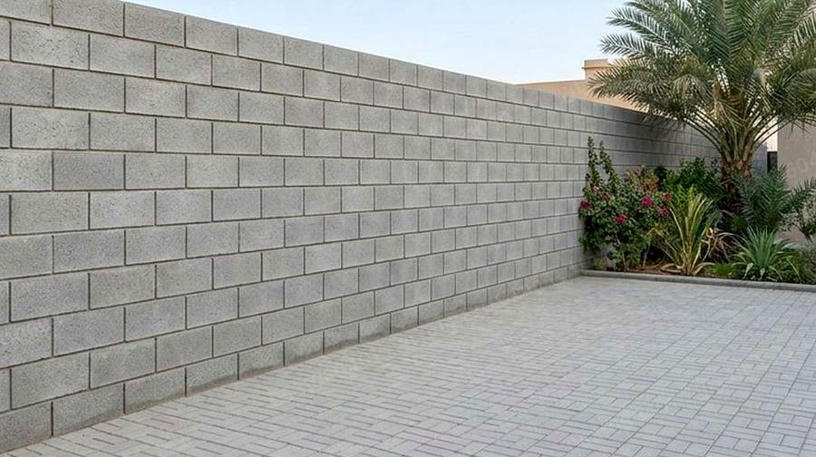
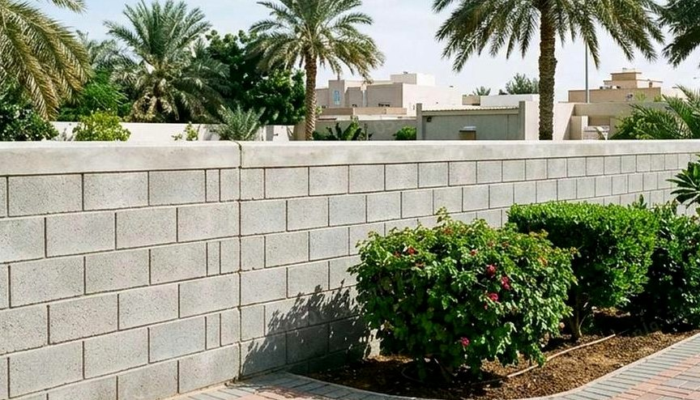
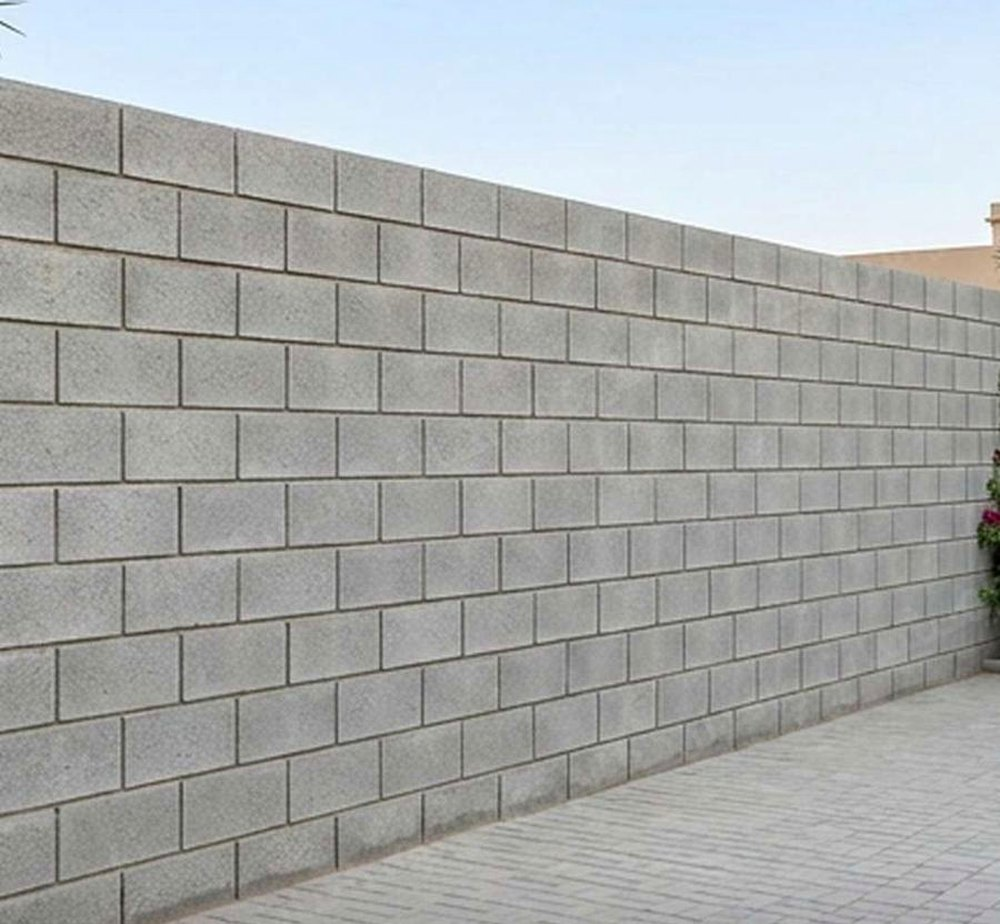
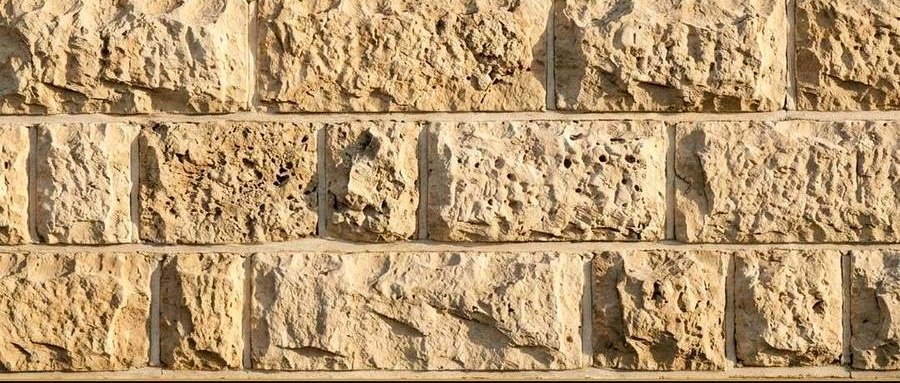
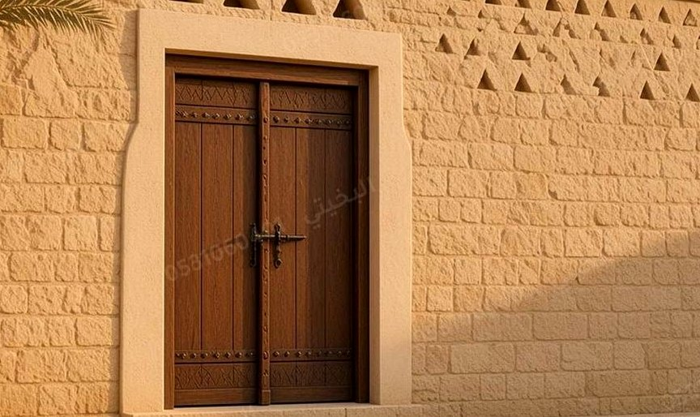
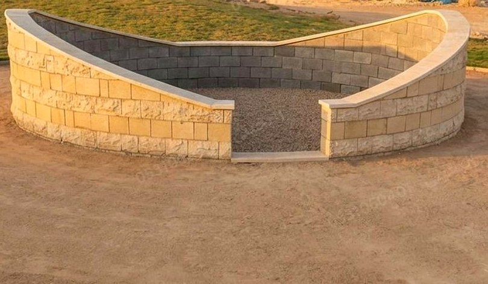
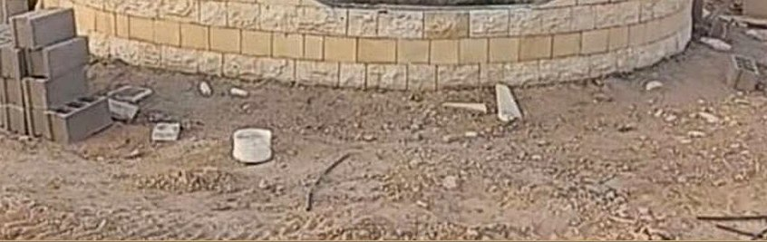
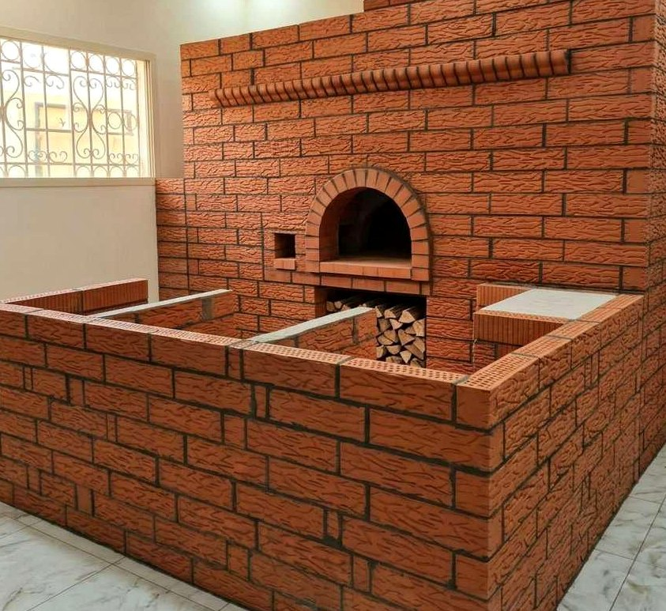
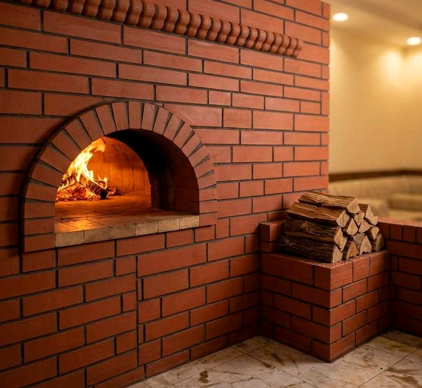

أعمالنا
أعمالنا في الرياض
أعمال حقيقية من مواقع شغل في الرياض
بلك وحجر وأسوار ومشبات وأفران
اختر النوع وشوف اللي يخصك


















الصور كلها من شغل في الرياض
وما فيها أسماء مواقع ولا أسماء زبائن
القراءة
كيف تعرف الشغل الزين من الصورة
01
الخط
استقامة المدماك على طول الجدار ووضوح الأفق في أعلى السور
02
الركن
كيف تربط الزاوية بين جدارين وهذا اللي يمسك الشكل كامل
03
الميلان
نهاية السور المسؤولة عن تصريف الماء بعيد عن الأساس
04
الحجر
تساوي السمك بين المدماك والمدماك وسلامة القوس في المنحني
للطلب
شفت اللي يعجبك كلّمني عليه
أرسل صورة مكانك وأنا أقرب لك اللي شفته